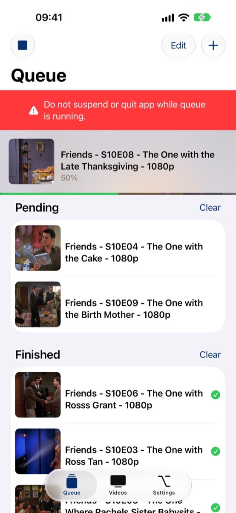
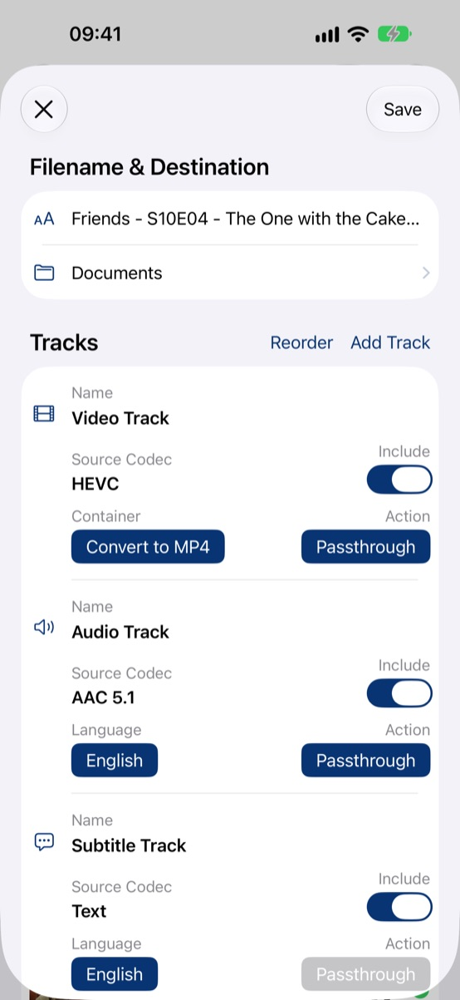
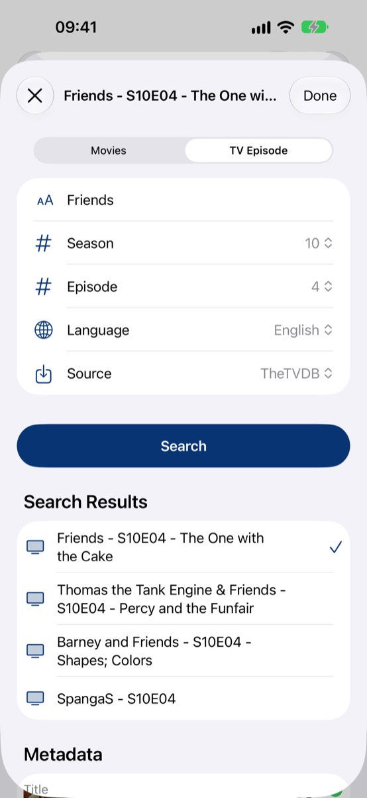
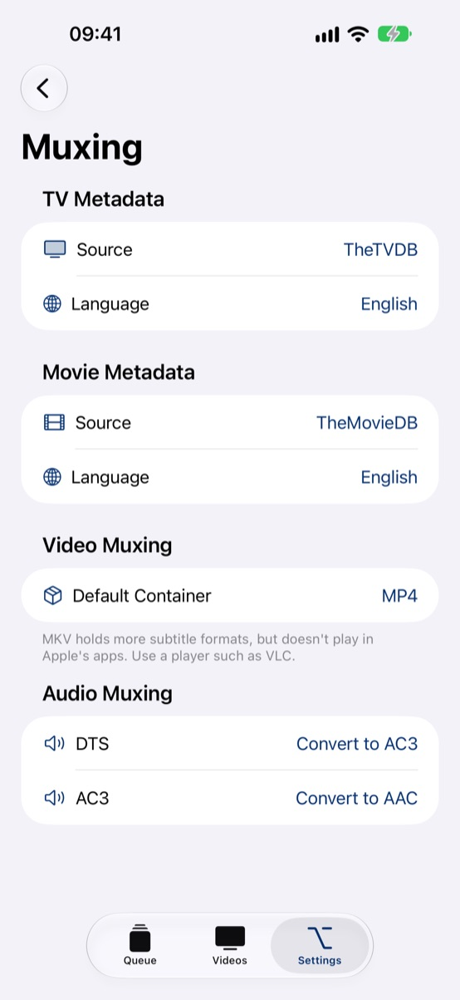

Remuxer
Enrich your media
Most of the time your videos are already encoded correctly and just the video container is wrong, so they won't play on your device. Remuxer muxes your video losslessly into an MP4 container so you can play it directly on your iPhone, iPad and Apple TV, or into MKV when you want to keep every subtitle format.
Download on the App StoreEverything your videos need
-
Fast, lossless muxing
Remux H.264 and H.265 videos from MKV and other containers to MP4 or MKV with ffmpeg, without re-encoding.
-
Convert when needed
Convert videos to H.264 or H.265 when the source codec won't play on your device.
-
Pick your tracks
Choose which video, audio, subtitle and chapter tracks to keep, drop the rest to reduce file size, and put them in the order you want.
-
Add tracks from other files
Add audio and subtitle tracks from separate files, such as SRT, ASS, VTT, PGS, AAC, AC3, DTS or FLAC. Pick them or just drop them on the editor.
-
Audio downmixing
Convert DTS and AC3 audio to AAC or AC3 with 2.0 or 5.1 channels.
-
Metadata & artwork
Import titles, descriptions and artwork from TheTVDB, TheMovieDB and the iTunes Store, or edit them yourself.
-
Processing queue
Line up whole seasons and let Remuxer work through them one after another, even in the background on iOS 26.
-
Made for iPad
On iPad the editor opens full screen, with every track on one line and, in landscape, the file details and metadata right next to the tracks.
See it in action




Remuxer Pro
Try Remuxer for free: the trial version exports the first half of each video, so you can check the result before you subscribe. Remuxer Pro unlocks full-length exports.
Support
Found a bug or have a question? Use Feedback & Support in the app's Settings, or write to thomas@tandt-web.de.